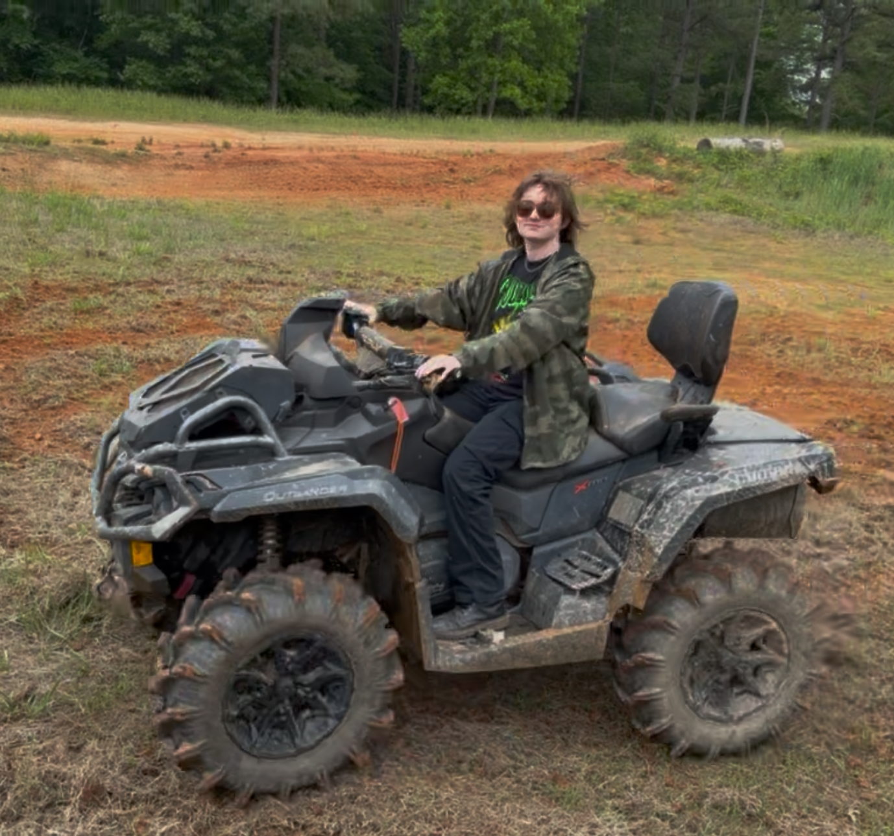

Introduction
Taylor Stewart || Tough Serval

My name is Taylor and I came to UNC Charlotte this previous fall to study Computer Science with a concentration in Cyber Security. Outside of computer science, my hobbies include art, music, and riding ATVs. I have some coding experience in java and c, as well as a small amount of experience with python.
I agree that everything I post here is publicly viewable and won't put anything I don't want public here. 2026/05/20
- Personal Background: I enjoy riding ATVs, such as four-wheelers and side-by-sides. I also enjoy drawing and painting in both digital and traditional styles. I try to challenge myself often and learn new things; I am always adopting new hobbies and learning new skills.
- Professional Background: Previously I have mostly worked in customer service at small businesses. Working in customer service has taught me how to be patient and communicate with people. I have also worked in home-repair, which taught me a lot of valuable, hands-on skills that I will likely use for the rest of my life.
- Academic Background:I'm a Computer Science major with a concentration in Cyber Security.
- Background in this Subject:None at all! I have never worked with HTML or CSS before, but I am enjoying learning it!
- Primary Computer Platform: My main computer is a Thinkpad X1 running Arch Linux.
- Backup Work Computer & Location Plan: When I have compatibility issues with linux, my backup is a laptop running Windows 11(though Windows 10 is much better in my opinion).
- Courses I'm Taking & Why:
- ITIS3135 - Front-End Web Application Development: This course! I am taking this class both because it is required and because I am interested in web development.
- ITSC3155 - Software Engineering: Required for my degree, this course focuses on development, design, and the overall process of engineering software.
- STAT2122 - Intro to Prob & Stat: Required math for my degree, I am taking it as a 4 week course. If anyone reading this is considering STAT 2122 as a 4 week course, I implore you to consider the more reasonable 8 week option.
- Where I'm From: I have lived in NC for my entire life, though I had not spent much time in the Charlotte area prior to being admitted to UNC Charlotte. Over the summer, I am taking only online classes, but during Spring and Fall semesters I commute to campus. So far, I have enjoyed campus and the surrounding area. There are so many interesting things to see and do!
I have two Microsoft Outlooks, and neither one of those are working.
- Artemis II Astronaut